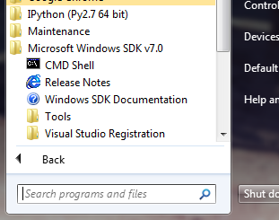
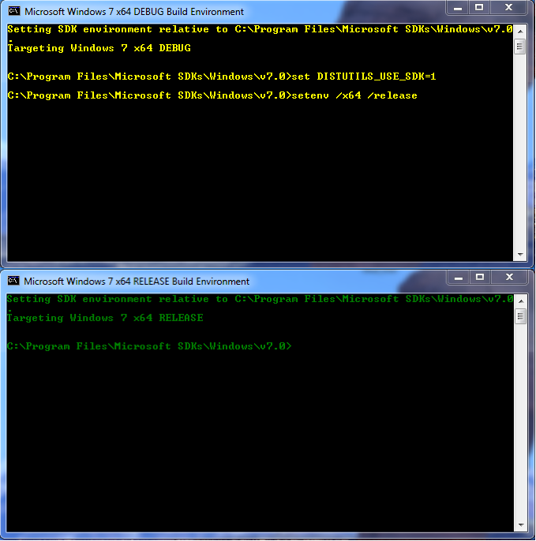

Installation¶
General Installation Requirements¶
QuTiP requires the following packages to run:
| Package | Version | Details |
|---|---|---|
| Python | 2.6+ (not 3) | Requires multiprocessing (v2.6 and higher only). At present, Matplotlib does not work for Python 3. |
| Numpy | 1.5.1+ | Not tested on lower versions. |
| Scipy | 0.8+ | Not tested on lower versions. Use 0.9+ if possible. |
| Matplotlib | 1.0.1+ | Some plotting does not work on lower versions. |
| Qt | 4.7.3+ | Optional. For GUI elements only. |
| PySide | 1.0.2+ | Optional, required only for GUI elements. PyQt4 may be used instead. |
| PyQt4 | 4.8+ | Optional, required only for GUI elements. PySide may be used instead (recommended). |
| PyObjC | 2.2+ | Mac only. Very optional. Needed only for a GUI Monte-Carlo progress bar. |
| Cython | 0.15+ | Optional. Needed for compiling time-dependent Hamiltonians. |
| GCC Compiler | 4.2+ | Needed for compiling Cython files. |
| Python Headers | 2.6+ | Linux only. Needed for compiling Cython files. |
On all platforms (Linux, Mac, Windows), QuTiP works “out-of-the-box” using the Enthought Python Distribution version 7.1 or higher. This distribution is created by the developers of Numpy and Scipy, and is free for academic use.
Installation on Ubuntu Linux¶
>>> sudo apt-get install python-scipy
>>> sudo apt-get install python-pyside or sudo apt-get install python-qt4
>>> sudo apt-get install python-setuptools
>>> sudo apt-get install python-dev
Ubuntu 11.04 and lower do not have Matplotlib>=1.0, and we therefore need to add the unofficial repository (in Ubuntu 11.10, skip this step)
>>> sudo add-apt-repository ppa:bgamari/matplotlib-unofficial
>>> sudo apt-get update
before running
>>> sudo apt-get install python-matplotlib
QuTiP installation:
>>> sudo python setup.py install
Note
On some versions of Ubuntu you might have to configure Matplotlib to use the GTKAgg or Qt4Agg backends instead of the default TkAgg backend. To do this, edit /etc/matplotlibrc, and change backend: TkAgg to backend: GTKAgg or backend: Qt4Agg.
Installation on Mac OS X (10.6+)¶
If you have not done so already, install the Apple XCode developer tools from the Apple App Store.
Macports [*]¶
On the Mac, it is recommended that you install the required libraries via MacPorts. After installation, the necessary “ports” for QuTiP may be installed via:
>>> sudo port install py27-scipy
>>> sudo port install py27-matplotlib
>>> sudo port install py27-cython
additional, but optional, ports include:
>>> sudo port install py27-pyside
>>> sudo port install py27-ipython
After installing the required ports, you may (probably) need to change your matplotlib backend
>>> /opt/local/Library/Frameworks/Python.framework/Versions/2.7/lib/\
python2.7/site-packages/matplotlib/mpl-data/matplotlibrc
on line #31 to read:
>>> backend : MacOSX
Enthought Python¶
One can also use the Enthought Python Distribution version 7.1 or higher to satisfy the QuTiP dependencies.
Installing¶
No matter which installation path you choose, installing QuTiP is the same as on linux. From the QuTiP directory:
>>> sudo python setup.py install
Installation on Microsoft Windows [†]¶
Note
We would like to thank Per Kaer Nielsen for help with installation on Windows.
The developers of QuTiP have not touched Windows in several years, and will be continuing this trend for the foreseeable future. Therefore we recommend the Enthought Python Distribution version 7.1 or higher to satisfy the QuTiP dependencies. QuTiP has also been reported to work out-of-the-box with Python(x,y). In Python(x,y), QuTiP may be installed using:
>>> python setup.py install build --compiler=mingw32
Keep in mind, compiling QuTiP using the mingw32 compiler will limit the amount of memory that you can use for any given calculation to around 4Gb.
Installing QuTiP on 64-bit Windows¶
Unfortunately, setting up a 64-bit compiler on Windows is a non-trivial task. Therefore we recommend having at least one bottle of wine within arms reach before proceeding with the setup instructions. The following instructions may also be used for installing a 32-bit Python installation as well by replacing AMD64 and x64 by win32 and x86, respectively:
Grab the latest Python 2.7 AMD64 version from the Python website
Windows binary executables for both AMD64 and win32, curiosity of Christoph Gohike, may be found at http://www.lfd.uci.edu/~gohlke/pythonlibs. Note that you need the Python 2.7 versions of the executables. It is recommended that you install the latest version of the following (required modules are denoted with a “*”):
- NumPy-MKL *
- SciPy *
- matplotlib *
- Distribute *
- Cython *
- PyQt
- PySide
- PyReadline
- iPython (Install in Administrator mode to get start menu links.)
You now need to grab the Microsoft Windows SDK for Windows 7 and .NET Framework 3.5 SP1 found at http://www.microsoft.com/download/en/details.aspx?displaylang=en&id=18950. You want the file named “GRMSDKX_EN_DVD.iso”. This download will need to be burned to a dvd, or extracted, before installation.
Next, run the “CMD Shell” executable located in the “Microsoft Windows SDK v7.0” directory of the start menu:
Figure showing the correct command line executable (CMD Shell) for setting the MS compiler environment flags.
The text in this shell will initially be yellow (see Fig. CMD shell before and after inputing compiler flags.). Now we need to set the compiler flags (replace x64 with x86 if using 32-bit Windows):
>>> set DISTUTILS_USE_SDK=1
>>> setenv /x64 /release
The shell text should now turn green.
CMD shell before and after inputing compiler flags.
- In this same CMD shell, change directories to the downloaded QuTiP directory at run the install command:
>>> python setup.py install
Verifying the Installation¶
Warning
Do not run QuTiP from the installation directory.
To verify that everything is installed properly, from the python command line, or iPython, call:
>>> from qutip import *
which will attempt to load the QuTiP modules. If nothing but another command prompt appears, then your system can find all of the necessary QuTiP files. To further verify that all of the QuTiP components are working, you can try running the examples built into QuTiP as dicussed in the guide section: QuTiP Examples
Checking Version Information via the About Box¶
QuTiP includes a graphical “about” box for viewing information about the important dependencies installed on your system. To view the about box, type:
>>> about()
which will pop-up a window similar to the one shown below. If instead you get command-line output, then your PyQt or PySide graphics are not installed properly or unavailable. When running the about box, QuTiP will automatically check for a newer version of itself from the QuTiP website. As shown below, the about box will have an “update” link next to the QuTiP version number if your are not running the latest version of QuTiP.

QuTiP about box window with link to updated version on the QuTiP website.
| [*] | Installing QuTiP via Macports will take a long time as each of the QuTiP dependencies is build from source code. The advantage is that everything is more or less guarenteed to work. However, if you have a hot date waiting for you, then we do not recommend this path. Or course, if you are reading this guide, this may not be the case. |
| [†] | QuTiP is developed on Unix based systems such as Linux and OSX. As such, we do not directly support the Windows operating system. That being said, we do strive to maintain compatibility with the Windows platform. Unfortunately, the multiprocessing routines used by Windows differ from those in Unix systems. Therefore we only support multiprocessing on Unix architectures. |